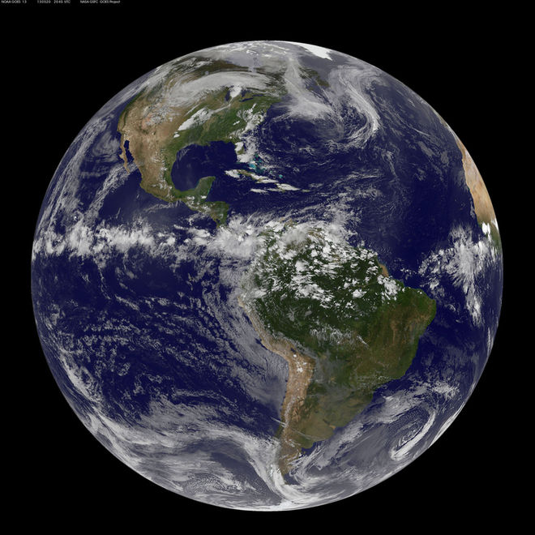

GLOBAL WARMING FACTSHEET
The Greenhouse Effect
The greenhouse effect is unquestionably real and helps to regulate the temperature of our planet. It is essential for life on Earth and is one of Earth's natural processes. It is the result of heat absorption by certain gases in the atmosphere (called greenhouse gases because they effectively 'trap' heat in the lower atmosphere) and re-radiation downward of some of that heat. Water vapor is the most abundant greenhouse gas, followed by carbon dioxide and other trace gases. Without a natural greenhouse effect, the temperature of the Earth would be about zero degrees F (-18°C) instead of its present 57°F (14°C). So, the concern is not with the fact that we have a greenhouse effect, but whether human activities are leading to an enhancement of the greenhouse effect by the emission of greenhouse gases through fossil fuel combustion and deforestation.
Increase of Greenhouse Gases
Human activity has been increasing the concentration of greenhouse gases in the atmosphere (mostly carbon dioxide from combustion of coal, oil, and gas; plus a few other trace gases). There is no scientific debate on this point. Pre-industrial levels of carbon dioxide (prior to the start of the Industrial Revolution) were about 280 parts per million by volume (ppmv), and current levels are greater than 380 ppmv and increasing at a rate of 1.9 ppm yr-1 since 2000. The global concentration of CO2 in our atmosphere today far exceeds the natural range over the last 650,000 years of 180 to 300 ppmv. According to the IPCC Special Report on Emission Scenarios (SRES), by the end of the 21st century, we could expect to see carbon dioxide concentrations of anywhere from 490 to 1260 ppm (75-350% above the pre-industrial concentration).
Conditions in Historical Context
Paleoclimatic data are critical for enabling us to extend our knowledge of climatic variability beyond what is measured by modern instruments. Many natural phenomena are climate dependent (such as the growth rate of a tree for example), and as such, provide natural 'archives' of climate information. Some useful paleoclimate data can be found in sources as diverse as tree rings, ice cores, corals, lake sediments (including fossil insects and pollen data), speleothems (stalactites etc), and ocean sediments. Some of these, including ice cores and tree rings provide us also with a chronology due to the nature of how they are formed, and so high resolution climate reconstruction is possible in these cases. However, there is not a comprehensive 'network' of paleoclimate data as there is with instrumental coverage, so global climate reconstructions are often difficult to obtain. Nevertheless, combining different types of paleoclimate records enables us to gain a near-global picture of climate changes in the distant past. For Northern Hemisphere temperature, recent decades appear to be the warmest since at least about 1000AD, and the warming since the late 19th century is unprecedented over the last 1000 years. Older data are insufficient to provide reliable hemispheric temperature estimates. Ice core data suggest that the 20th century has been warm in many parts of the globe, but also that the significance of the warming varies geographically, when viewed in the context of climate variations of the last millennium. Large and rapid climatic changes affecting the atmospheric and oceanic circulation and temperature, and the hydrological cycle, occurred during the last ice age and during the transition towards the present Holocene period (which began about 10,000 years ago). Based on the incomplete evidence available, the projected change of 3 to 7°F (1.5 - 4°C) over the next century would be unprecedented in comparison with the best available records from the last several thousand years.
Global Temperatures
Global surface temperatures have increased about 0.74°C (plus or minus 0.18°C) since the late–19th century, and the linear trend for the past 50 years of 0.13°C (plus or minus 0.03°C) per decade is nearly twice that for the past 100 years. The warming has not been globally uniform. Some areas (including parts of the southeastern U.S. and parts of the North Atlantic) have, in fact, cooled slightly over the last century. The recent warmth has been greatest over North America and Eurasia between 40 and 70°N. Lastly, seven of the eight warmest years on record have occurred since 2001 and the 10 warmest years have all occurred since 1995. Recent analyses of temperature trends in the lower and mid- troposphere (between about 2,500 and 26,000 ft.) using both satellite and radiosonde (weather balloon) data show warming rates that are similar to those observed for surface air temperatures. These warming rates are consistent with their uncertainties and these analyses reconcile a discrepancy between warming rates noted on the IPCC Third Assessment Report (U.S. Climate Change Science Plan Synthesis and Assessment Report 1.1).
Climate Variability and Extremes
Examination of changes in climate extremes requires long-term daily or even hourly data sets which until recently have been scarce for many parts of the globe. However these data sets have become more widely available allowing research into changes in temperature and precipitation extremes on global and regional scales. Global changes in temperature extremes include decreases in the number of unusually cold days and nights and increases in the number of unusually warm days and nights. Other observed changes include lengthening of the growing season, and decreases in the number of frost days. Global temperature extremes have been found to exhibit no significant trend in interannual variability, but several studies suggest a significant decrease in intra-annual variability. There has been a clear trend to fewer extremely low minimum temperatures in several widely-separated areas in recent decades. Widespread significant changes in extreme high temperature events have not been observed. There is some indication of a decrease in day-to-day temperature variability in recent decades.In areas where a drought or excessive wetness usually accompanies an El Niño or La Niña, these dry or wet spells have been more intense in recent years. Further, there is some evidence for increasing drought worldwide, however in the U.S. there is no evidence for increasing drought. In some areas where overall precipitation has increased (ie. the mid-high northern latitudes), there is evidence of increases in the heavy and extreme precipitation events. Even in areas such as eastern Asia, it has been found that extreme precipitation events have increased despite total precipitation remaining constant or even decreasing somewhat. This is related to a decrease in the frequency of precipitation in this region.
A BIG THANK YOU to NOAA for the content for this page. If you want to learn more about Global Warming please visit the National Oceanic and Atmospheric Administration HERE.
Make Your Own List to Reduce Your Carbon Footprint

Here you can create your own checklist, of ways you can reduce YOUR carbon footprint. This list should be customized to your lifestyle.
| To Do | ||
|---|---|---|
|
|
||
|
|
||
|
|
||
|
|
||
|
|
||
|
|
Here are Some Ways to Help Global Warming
Global warming is the term used to describe a gradual increase in the average temperature of the Earth's atmosphere and its oceans, a change that is believed to be permanently changing the Earth’s climate.
-
star
Reduce Fossil Fuel Use
There are two ways to reduce fossil fuel use: Use less energy, or use alternative, nonpolluting energy sources like solar and wind power. At home, this translates to saving electricity by using energy-efficient appliances and compact fluorescent light bulbs, as well as reducing gasoline use and buying green power from your electricity provider, if available.
-
star
Plant Trees
Because carbon dioxide is the most important greenhouse gas, planting trees and other plants can slow or stop global warming. Deforestation of rain forests is a large contributor to global warming and CO2 emissions, but planting new trees, even in your own backyard, can help to offset this.
-
star
Reduce Waste
Decomposing waste in landfills produces methane and other greenhouse gases. Waste also requires energy to manufacture in the first place. Reducing your consumption patterns and reusing items whenever possible minimizes your carbon footprint, since fewer new items need to be made. Recycling metal, plastic, glass and paper lowers greenhouse gas emissions, since recycled items take far less energy to manufacture than items produced from scratch.
-
star
Conserve Water
Cities consume significant amounts of energy when purifying and distributing water, which contributes to greenhouse gas emissions. Saving water reduces the amount of energy used. At home, turn off water immediately whenever you're not using it, and repair or replace leaky faucets and toilets. In your yard, landscape with plants and grasses that require less water, and capture rainwater in barrels for irrigating.
Github Page

If you would like to follow me on Github or just check out some of the projects I've done. Click here for my Github for IT_202.
About Me
My name is Alexandra Dyla, and I'm currently a student at the University of Illinois Chicago. I've been working toward my degree in Computer Engineering. My expected graduation is May 2017. Some of my interests include computer architecture, networking, and computer systems.